Embedding: [[0.118258, 0.01762, 0.003847, 0.002776, 0.022893, 0.419659, 0.002776, 0.004459, 0.36949, 0.002776, 0.00602, 0.002776, 0.002776, 0.002776, 0.002776, 0.002776, 0.007222, 0.002776, 0.002776, 0.002776]]
Output: [1.0277330360317276e-22, 1.0]
Embedding: [[0.125529, 0.018856, 0.00342, 0.002689, 0.02309, 0.419596, 0.002689, 0.005155, 0.359878, 0.002689, 0.007021, 0.002689, 0.002689, 0.002689, 0.002689, 0.002689, 0.007879, 0.002689, 0.002689, 0.002689]]
Output: [4.609792003370574e-23, 1.0]
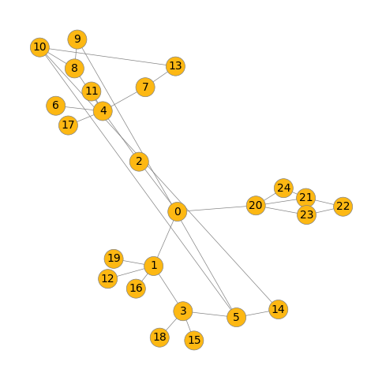
Embedding: [[0.127911, 0.020216, 0.003992, 0.003022, 0.025098, 0.408876, 0.003022, 0.006127, 0.356827, 0.003022, 0.008194, 0.003022, 0.003022, 0.003022, 0.003022, 0.003022, 0.009521, 0.003022, 0.003022, 0.003022]]
Output: [2.998963909546959e-22, 1.0]
Embedding: [[0.11893, 0.021234, 0.005117, 0.003656, 0.026385, 0.420822, 0.003656, 0.007024, 0.33949, 0.003656, 0.008966, 0.003656, 0.003656, 0.003656, 0.003656, 0.003656, 0.01182, 0.003656, 0.003656, 0.003656]]
Output: [8.051835859315125e-21, 1.0]
Embedding: [[0.112337, 0.02197, 0.006564, 0.004871, 0.027558, 0.41423, 0.004871, 0.008962, 0.326112, 0.004871, 0.011922, 0.004871, 0.004871, 0.004871, 0.004871, 0.004871, 0.016769, 0.004871, 0.004871, 0.004871]]
Output: [8.036439637046555e-19, 1.0]
Embedding: [[0.110632, 0.019537, 0.009801, 0.005254, 0.032693, 0.402138, 0.005254, 0.009215, 0.32971, 0.005254, 0.012372, 0.005254, 0.005254, 0.005254, 0.005254, 0.005254, 0.01611, 0.005254, 0.005254, 0.005254]]
Output: [1.326770984601271e-17, 1.0]
Embedding: [[0.115982, 0.021069, 0.007038, 0.004487, 0.026828, 0.400176, 0.004487, 0.008546, 0.344374, 0.004487, 0.011795, 0.004487, 0.004487, 0.004487, 0.004487, 0.004487, 0.01483, 0.004487, 0.004487, 0.004487]]
Output: [6.071269949664646e-19, 1.0]
Embedding: [[0.116716, 0.02382, 0.009028, 0.005388, 0.027998, 0.383185, 0.005388, 0.009778, 0.339601, 0.005388, 0.013388, 0.005388, 0.005388, 0.005388, 0.005388, 0.005388, 0.017214, 0.005388, 0.005388, 0.005388]]
Output: [1.0198816833881773e-17, 1.0]
Embedding: [[0.112123, 0.021292, 0.009764, 0.005422, 0.029728, 0.397849, 0.005422, 0.010182, 0.327722, 0.005422, 0.013878, 0.005422, 0.005422, 0.005422, 0.005422, 0.005422, 0.01782, 0.005422, 0.005422, 0.005422]]
Output: [2.5894599562758138e-17, 1.0]
Embedding: [[0.115515, 0.023424, 0.009142, 0.005979, 0.029658, 0.392031, 0.005979, 0.011286, 0.317725, 0.005979, 0.015326, 0.005979, 0.005979, 0.005979, 0.005979, 0.005979, 0.020128, 0.005979, 0.005979, 0.005979]]
Output: [3.7818684371034624e-17, 1.0]
Embedding: [[0.11524, 0.022601, 0.00855, 0.005237, 0.031902, 0.396877, 0.005237, 0.010601, 0.324014, 0.005237, 0.013625, 0.005237, 0.005237, 0.005237, 0.005237, 0.005237, 0.018984, 0.005237, 0.005237, 0.005237]]
Output: [6.267317958694307e-18, 1.0]
Embedding: [[0.112626, 0.023467, 0.007564, 0.005184, 0.027446, 0.402415, 0.005184, 0.010505, 0.325864, 0.005184, 0.014249, 0.005184, 0.005184, 0.005184, 0.005184, 0.005184, 0.018839, 0.005184, 0.005184, 0.005184]]
Output: [4.5274932598798856e-18, 1.0]
Embedding: [[0.112385, 0.022593, 0.010178, 0.006007, 0.02907, 0.384531, 0.006007, 0.011397, 0.327852, 0.006007, 0.016268, 0.006007, 0.006007, 0.006007, 0.006007, 0.006007, 0.019648, 0.006007, 0.006007, 0.006007]]
Output: [1.0114360204415006e-16, 1.0]
Embedding: [[0.126632, 0.026181, 0.009078, 0.005472, 0.030224, 0.371422, 0.005472, 0.012385, 0.326956, 0.005472, 0.016873, 0.005472, 0.005472, 0.005472, 0.005472, 0.005472, 0.020058, 0.005472, 0.005472, 0.005472]]
Output: [1.3359482226253017e-17, 1.0]
Embedding: [[0.1202, 0.024902, 0.012542, 0.006069, 0.031621, 0.368618, 0.006069, 0.012515, 0.324029, 0.006069, 0.01728, 0.006069, 0.006069, 0.006069, 0.006069, 0.006069, 0.021529, 0.006069, 0.006069, 0.006069]]
Output: [2.7262038634021395e-16, 1.0]
Embedding: [[0.125595, 0.028057, 0.010976, 0.006253, 0.032514, 0.361431, 0.006253, 0.016039, 0.307819, 0.006253, 0.021579, 0.006253, 0.006253, 0.006253, 0.006253, 0.006253, 0.027204, 0.006253, 0.006253, 0.006253]]
Output: [2.3858967301396995e-16, 1.0]
Embedding: [[0.109216, 0.027231, 0.01312, 0.007988, 0.032156, 0.367283, 0.007988, 0.017351, 0.288887, 0.007988, 0.023353, 0.007988, 0.007988, 0.007988, 0.007988, 0.007988, 0.033539, 0.007988, 0.007988, 0.007988]]
Output: [1.1775695978218093e-14, 1.0]
Embedding: [[0.11792, 0.028194, 0.015768, 0.007855, 0.033449, 0.336531, 0.007855, 0.018314, 0.307208, 0.007855, 0.026712, 0.007855, 0.007855, 0.007855, 0.007855, 0.007855, 0.029497, 0.007855, 0.007855, 0.007855]]
Output: [2.1723899738010193e-14, 1.0]
Embedding: [[0.123276, 0.030078, 0.016105, 0.008756, 0.039357, 0.325531, 0.008756, 0.020072, 0.287178, 0.008756, 0.026593, 0.008756, 0.008756, 0.008756, 0.008756, 0.008756, 0.035491, 0.008756, 0.008756, 0.008756]]
Output: [3.7446574432855456e-14, 1.0]
Embedding: [[0.115255, 0.027532, 0.019576, 0.009017, 0.036789, 0.327359, 0.009017, 0.018961, 0.294683, 0.009017, 0.027604, 0.009017, 0.009017, 0.009017, 0.009017, 0.009017, 0.033058, 0.009017, 0.009017, 0.009017]]
Output: [2.5740276880445445e-13, 1.0]
Embedding: [[0.124519, 0.028748, 0.017646, 0.007469, 0.041838, 0.340538, 0.007469, 0.018908, 0.288852, 0.007469, 0.023993, 0.007469, 0.007469, 0.007469, 0.007469, 0.007469, 0.032804, 0.007469, 0.007469, 0.007469]]
Output: [1.3516309721310106e-14, 1.0]
Embedding: [[0.115474, 0.029253, 0.014637, 0.007535, 0.033222, 0.35423, 0.007535, 0.018542, 0.292391, 0.007535, 0.023741, 0.007535, 0.007535, 0.007535, 0.007535, 0.007535, 0.035628, 0.007535, 0.007535, 0.007535]]
Output: [1.2135971277937342e-14, 1.0]
Embedding: [[0.131272, 0.033995, 0.014485, 0.007796, 0.036644, 0.326469, 0.007796, 0.020046, 0.289846, 0.007796, 0.027823, 0.007796, 0.007796, 0.007796, 0.007796, 0.007796, 0.033665, 0.007796, 0.007796, 0.007796]]
Output: [6.364154097107926e-15, 1.0]
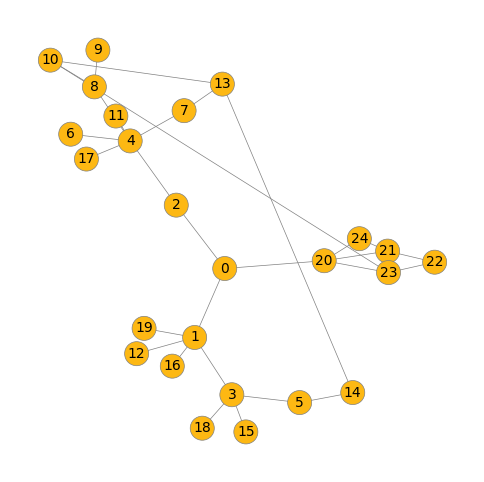
Embedding: [[0.127893, 0.028369, 0.012605, 0.005584, 0.030637, 0.353373, 0.005584, 0.016861, 0.318825, 0.005584, 0.023778, 0.005584, 0.005584, 0.005584, 0.005584, 0.005584, 0.026236, 0.005584, 0.005584, 0.005584]]
Output: [3.384103353259619e-16, 1.0]
Embedding: [[0.138619, 0.030505, 0.012747, 0.006059, 0.036133, 0.338478, 0.006059, 0.018974, 0.303985, 0.006059, 0.022444, 0.006059, 0.006059, 0.006059, 0.006059, 0.006059, 0.03146, 0.006059, 0.006059, 0.006059]]
Output: [3.6299342844698865e-16, 1.0]
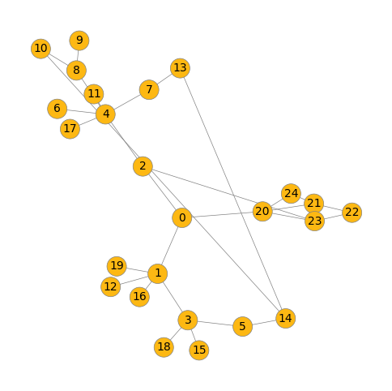
Embedding: [[0.112756, 0.027712, 0.021301, 0.009912, 0.038129, 0.315881, 0.009912, 0.021244, 0.285399, 0.009912, 0.030713, 0.009912, 0.009912, 0.009912, 0.009912, 0.009912, 0.037832, 0.009912, 0.009912, 0.009912]]
Output: [1.4206436591349125e-12, 1.0]
Embedding: [[0.119829, 0.029851, 0.018058, 0.009754, 0.039911, 0.313671, 0.009754, 0.023501, 0.275538, 0.009754, 0.032608, 0.009754, 0.009754, 0.009754, 0.009754, 0.009754, 0.039734, 0.009754, 0.009754, 0.009754]]
Output: [3.711190697201078e-13, 1.0]
Embedding: [[0.121554, 0.030533, 0.018473, 0.009577, 0.039519, 0.310181, 0.009577, 0.023614, 0.278341, 0.009577, 0.032892, 0.009577, 0.009577, 0.009577, 0.009577, 0.009577, 0.039551, 0.009577, 0.009577, 0.009577]]
Output: [3.5415469385249865e-13, 1.0]
Embedding: [[0.114705, 0.03164, 0.017185, 0.009327, 0.034682, 0.322788, 0.009327, 0.023257, 0.280474, 0.009327, 0.032225, 0.009327, 0.009327, 0.009327, 0.009327, 0.009327, 0.040445, 0.009327, 0.009327, 0.009327]]
Output: [2.9041043658403765e-13, 1.0]
Embedding: [[0.129793, 0.028954, 0.013046, 0.006813, 0.035834, 0.330146, 0.006813, 0.0223, 0.299981, 0.006813, 0.026689, 0.006813, 0.006813, 0.006813, 0.006813, 0.006813, 0.038311, 0.006813, 0.006813, 0.006813]]
Output: [2.9923238806771075e-15, 1.0]
Embedding: [[0.113718, 0.028753, 0.019157, 0.008529, 0.037791, 0.337763, 0.008529, 0.022739, 0.276871, 0.008529, 0.029601, 0.008529, 0.008529, 0.008529, 0.008529, 0.008529, 0.03979, 0.008529, 0.008529, 0.008529]]
Output: [2.545801297635514e-13, 1.0]
Embedding: [[0.116236, 0.03146, 0.021016, 0.010575, 0.040998, 0.306261, 0.010575, 0.025435, 0.262654, 0.010575, 0.033848, 0.010575, 0.010575, 0.010575, 0.010575, 0.010575, 0.045774, 0.010575, 0.010575, 0.010575]]
Output: [2.3600713397464723e-12, 1.0]
Embedding: [[0.114032, 0.030441, 0.021917, 0.011045, 0.040444, 0.305871, 0.011045, 0.026171, 0.257518, 0.011045, 0.036246, 0.011045, 0.011045, 0.011045, 0.011045, 0.011045, 0.045863, 0.011045, 0.011045, 0.011045]]
Output: [6.025101424722568e-12, 1.0]
Embedding: [[0.115958, 0.031436, 0.020684, 0.01008, 0.039026, 0.309919, 0.01008, 0.02604, 0.266114, 0.01008, 0.034759, 0.01008, 0.01008, 0.01008, 0.01008, 0.01008, 0.045188, 0.01008, 0.01008, 0.01008]]
Output: [1.84565210337162e-12, 1.0]
Embedding: [[0.125259, 0.032858, 0.021502, 0.009472, 0.040528, 0.309755, 0.009472, 0.026049, 0.262943, 0.009472, 0.032509, 0.009472, 0.009472, 0.009472, 0.009472, 0.009472, 0.044409, 0.009472, 0.009472, 0.009472]]
Output: [8.56914257434116e-13, 1.0]
Embedding: [[0.11131, 0.031552, 0.022463, 0.01178, 0.042103, 0.2959, 0.01178, 0.027667, 0.250399, 0.01178, 0.037149, 0.01178, 0.01178, 0.01178, 0.01178, 0.01178, 0.051875, 0.01178, 0.01178, 0.01178]]
Output: [1.4026479630557809e-11, 1.0]
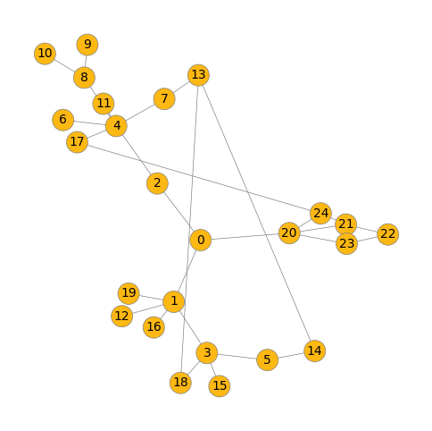
Embedding: [[0.115277, 0.031789, 0.022165, 0.010032, 0.038695, 0.312697, 0.010032, 0.026286, 0.261698, 0.010032, 0.034889, 0.010032, 0.010032, 0.010032, 0.010032, 0.010032, 0.046155, 0.010032, 0.010032, 0.010032]]
Output: [3.0023271195556145e-12, 1.0]
Embedding: [[0.117367, 0.032116, 0.021795, 0.009623, 0.039946, 0.310797, 0.009623, 0.026121, 0.266138, 0.009623, 0.035749, 0.009623, 0.009623, 0.009623, 0.009623, 0.009623, 0.044114, 0.009623, 0.009623, 0.009623]]
Output: [1.5657991396522686e-12, 1.0]
Embedding: [[0.120193, 0.032559, 0.01758, 0.00904, 0.036304, 0.312853, 0.00904, 0.027419, 0.270411, 0.00904, 0.038962, 0.00904, 0.00904, 0.00904, 0.00904, 0.00904, 0.044278, 0.00904, 0.00904, 0.00904]]
Output: [3.908018656947898e-13, 1.0]
Embedding: [[0.116468, 0.034483, 0.018435, 0.009751, 0.037752, 0.304957, 0.009751, 0.027861, 0.265301, 0.009751, 0.038456, 0.009751, 0.009751, 0.009751, 0.009751, 0.009751, 0.049025, 0.009751, 0.009751, 0.009751]]
Output: [9.089396986808329e-13, 1.0]
Embedding: [[0.110202, 0.027691, 0.029812, 0.010351, 0.038216, 0.306919, 0.010351, 0.026059, 0.265374, 0.010351, 0.037147, 0.010351, 0.010351, 0.010351, 0.010351, 0.010351, 0.044715, 0.010351, 0.010351, 0.010351]]
Output: [4.4539601173898546e-11, 1.0]
Embedding: [[0.104358, 0.0278, 0.026408, 0.012097, 0.039945, 0.292579, 0.012097, 0.028354, 0.255292, 0.012097, 0.040725, 0.012097, 0.012097, 0.012097, 0.012097, 0.012097, 0.051472, 0.012097, 0.012097, 0.012097]]
Output: [1.1252791753957325e-10, 1.0]
Embedding: [[0.118795, 0.032644, 0.02448, 0.009141, 0.037527, 0.31489, 0.009141, 0.026702, 0.264319, 0.009141, 0.035444, 0.009141, 0.009141, 0.009141, 0.009141, 0.009141, 0.044653, 0.009141, 0.009141, 0.009141]]
Output: [2.6937594949788535e-12, 1.0]
Embedding: [[0.11095, 0.031764, 0.024487, 0.011254, 0.039198, 0.293724, 0.011254, 0.029064, 0.256003, 0.011254, 0.039772, 0.011254, 0.011254, 0.011254, 0.011254, 0.011254, 0.05124, 0.011254, 0.011254, 0.011254]]
Output: [2.4810693430299402e-11, 1.0]
Embedding: [[0.113272, 0.033007, 0.024127, 0.010367, 0.03951, 0.304764, 0.010367, 0.02854, 0.255304, 0.010367, 0.038046, 0.010367, 0.010367, 0.010367, 0.010367, 0.010367, 0.049398, 0.010367, 0.010367, 0.010367]]
Output: [8.57524554837008e-12, 1.0]
Embedding: [[0.110162, 0.030942, 0.024595, 0.010867, 0.039146, 0.308453, 0.010867, 0.028799, 0.249217, 0.010867, 0.038611, 0.010867, 0.010867, 0.010867, 0.010867, 0.010867, 0.050538, 0.010867, 0.010867, 0.010867]]
Output: [2.002444043913698e-11, 1.0]
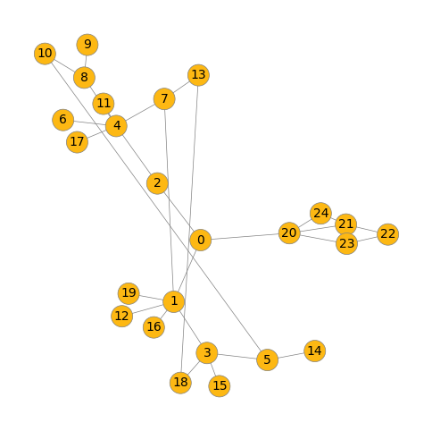
Embedding: [[0.104371, 0.026305, 0.033346, 0.010468, 0.039801, 0.312, 0.010468, 0.026355, 0.260116, 0.010468, 0.0354, 0.010468, 0.010468, 0.010468, 0.010468, 0.010468, 0.047157, 0.010468, 0.010468, 0.010468]]
Output: [1.2083610501090192e-10, 1.0]
Embedding: [[0.11095, 0.030833, 0.028889, 0.010093, 0.036611, 0.303504, 0.010093, 0.026706, 0.267833, 0.010093, 0.037027, 0.010093, 0.010093, 0.010093, 0.010093, 0.010093, 0.046619, 0.010093, 0.010093, 0.010093]]
Output: [2.7949094427714982e-11, 1.0]
Embedding: [[0.104188, 0.028424, 0.027175, 0.012049, 0.039393, 0.292158, 0.012049, 0.028583, 0.253786, 0.012049, 0.041155, 0.012049, 0.012049, 0.012049, 0.012049, 0.012049, 0.052593, 0.012049, 0.012049, 0.012049]]
Output: [1.4003177783994403e-10, 1.0]
Embedding: [[0.114853, 0.034083, 0.026668, 0.011118, 0.04114, 0.285119, 0.011118, 0.028812, 0.25544, 0.011118, 0.041723, 0.011118, 0.011118, 0.011118, 0.011118, 0.011118, 0.049857, 0.011118, 0.011118, 0.011118]]
Output: [2.6021127960684787e-11, 1.0]
Embedding: [[0.118514, 0.032349, 0.029786, 0.011654, 0.043714, 0.274556, 0.011654, 0.030536, 0.249105, 0.011654, 0.039041, 0.011654, 0.011654, 0.011654, 0.011654, 0.011654, 0.05421, 0.011654, 0.011654, 0.011654]]
Output: [7.78909714505005e-11, 1.0]
Embedding: [[0.114294, 0.031926, 0.025635, 0.009966, 0.038201, 0.311702, 0.009966, 0.029157, 0.252195, 0.009966, 0.038316, 0.009966, 0.009966, 0.009966, 0.009966, 0.009966, 0.048952, 0.009966, 0.009966, 0.009966]]
Output: [1.1706292185609257e-11, 1.0]
Embedding: [[0.092427, 0.027691, 0.028152, 0.013128, 0.035618, 0.294568, 0.013128, 0.029596, 0.248842, 0.013128, 0.043842, 0.013128, 0.013128, 0.013128, 0.013128, 0.013128, 0.054853, 0.013128, 0.013128, 0.013128]]
Output: [8.708699872350678e-10, 1.0]
Embedding: [[0.124298, 0.033774, 0.025743, 0.00967, 0.039888, 0.289529, 0.00967, 0.028836, 0.263289, 0.00967, 0.042304, 0.00967, 0.00967, 0.00967, 0.00967, 0.00967, 0.045973, 0.00967, 0.00967, 0.00967]]
Output: [6.029561832460173e-12, 1.0]
Embedding: [[0.111967, 0.032697, 0.022411, 0.010792, 0.042604, 0.294957, 0.010792, 0.030611, 0.250179, 0.010792, 0.042124, 0.010792, 0.010792, 0.010792, 0.010792, 0.010792, 0.053736, 0.010792, 0.010792, 0.010792]]
Output: [9.393289965298202e-12, 1.0]
Embedding: [[0.107335, 0.02861, 0.033682, 0.010935, 0.039182, 0.299106, 0.010935, 0.02801, 0.255419, 0.010935, 0.038367, 0.010935, 0.010935, 0.010935, 0.010935, 0.010935, 0.050009, 0.010935, 0.010935, 0.010935]]
Output: [1.9482318536212517e-10, 1.0]
Embedding: [[0.113692, 0.033269, 0.028885, 0.011242, 0.043607, 0.285071, 0.011242, 0.030953, 0.246212, 0.011242, 0.041243, 0.011242, 0.011242, 0.011242, 0.011242, 0.011242, 0.053402, 0.011242, 0.011242, 0.011242]]
Output: [5.404176411927253e-11, 1.0]
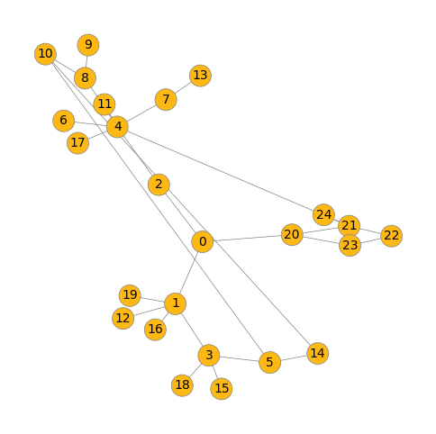
Embedding: [[0.121212, 0.033224, 0.021692, 0.009249, 0.040381, 0.298123, 0.009249, 0.030179, 0.262223, 0.009249, 0.042889, 0.009249, 0.009249, 0.009249, 0.009249, 0.009249, 0.048336, 0.009249, 0.009249, 0.009249]]
Output: [1.8592904993397497e-12, 1.0]
Embedding: [[0.106228, 0.032618, 0.026404, 0.01212, 0.039848, 0.290682, 0.01212, 0.031151, 0.238273, 0.01212, 0.040448, 0.01212, 0.01212, 0.01212, 0.01212, 0.01212, 0.061027, 0.01212, 0.01212, 0.01212]]
Output: [1.173934560672052e-10, 1.0]
Embedding: [[0.112516, 0.031696, 0.035909, 0.010994, 0.038484, 0.283941, 0.010994, 0.029415, 0.256629, 0.010994, 0.038978, 0.010994, 0.010994, 0.010994, 0.010994, 0.010994, 0.051495, 0.010994, 0.010994, 0.010994]]
Output: [2.5442226103677967e-10, 1.0]
Embedding: [[0.122481, 0.033385, 0.030106, 0.010186, 0.039563, 0.284028, 0.010186, 0.031281, 0.254641, 0.010186, 0.040871, 0.010186, 0.010186, 0.010186, 0.010186, 0.010186, 0.0516, 0.010186, 0.010186, 0.010186]]
Output: [3.565027439922375e-11, 1.0]
Embedding: [[0.121981, 0.034066, 0.027607, 0.010233, 0.040483, 0.28061, 0.010233, 0.031125, 0.255249, 0.010233, 0.045887, 0.010233, 0.010233, 0.010233, 0.010233, 0.010233, 0.050429, 0.010233, 0.010233, 0.010233]]
Output: [2.186051686892121e-11, 1.0]
Embedding: [[0.100815, 0.031843, 0.034782, 0.01203, 0.036819, 0.289425, 0.01203, 0.030302, 0.243849, 0.01203, 0.041387, 0.01203, 0.01203, 0.01203, 0.01203, 0.01203, 0.058444, 0.01203, 0.01203, 0.01203]]
Output: [9.329715888739543e-10, 1.0]
Embedding: [[0.108166, 0.032282, 0.029041, 0.01053, 0.037522, 0.303025, 0.01053, 0.031783, 0.245143, 0.01053, 0.041807, 0.01053, 0.01053, 0.01053, 0.01053, 0.01053, 0.055399, 0.01053, 0.01053, 0.01053]]
Output: [7.834646126303468e-11, 1.0]
Embedding: [[0.116806, 0.033777, 0.027216, 0.010415, 0.044653, 0.285762, 0.010415, 0.032768, 0.24425, 0.010415, 0.043714, 0.010415, 0.010415, 0.010415, 0.010415, 0.010415, 0.056491, 0.010415, 0.010415, 0.010415]]
Output: [2.3663151299535556e-11, 1.0]
Embedding: [[0.101499, 0.028336, 0.037652, 0.012952, 0.041616, 0.274758, 0.012952, 0.032268, 0.238419, 0.012952, 0.045553, 0.012952, 0.012952, 0.012952, 0.012952, 0.012952, 0.057431, 0.012952, 0.012952, 0.012952]]
Output: [3.1947893219808066e-09, 1.0]
Embedding: [[0.1204, 0.032863, 0.018862, 0.009105, 0.037904, 0.287295, 0.009105, 0.033563, 0.267964, 0.009105, 0.043116, 0.009105, 0.009105, 0.009105, 0.009105, 0.009105, 0.057879, 0.009105, 0.009105, 0.009105]]
Output: [1.4715859824113164e-12, 1.0]
Embedding: [[0.116084, 0.035043, 0.032425, 0.011534, 0.041128, 0.271622, 0.011534, 0.032689, 0.240983, 0.011534, 0.045975, 0.011534, 0.011534, 0.011534, 0.011534, 0.011534, 0.057178, 0.011534, 0.011534, 0.011534]]
Output: [2.1462048804821166e-10, 1.0]
Embedding: [[0.104521, 0.028733, 0.037088, 0.011639, 0.03991, 0.286563, 0.011639, 0.031529, 0.244451, 0.011639, 0.044086, 0.011639, 0.011639, 0.011639, 0.011639, 0.011639, 0.055091, 0.011639, 0.011639, 0.011639]]
Output: [1.0796371574528507e-09, 1.0]
Embedding: [[0.104521, 0.028733, 0.037088, 0.011639, 0.03991, 0.286563, 0.011639, 0.031529, 0.244451, 0.011639, 0.044086, 0.011639, 0.011639, 0.011639, 0.011639, 0.011639, 0.055091, 0.011639, 0.011639, 0.011639]]
Output: [1.0796371574528507e-09, 1.0]
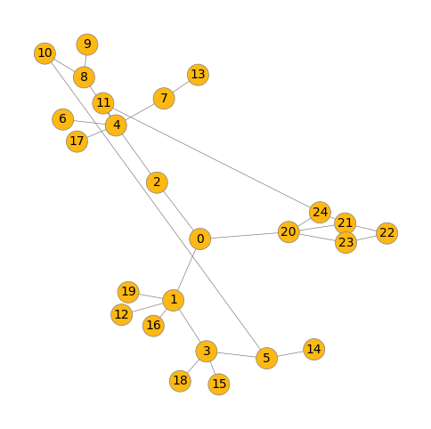
Embedding: [[0.116216, 0.033648, 0.027751, 0.011517, 0.04062, 0.270366, 0.011517, 0.034411, 0.243553, 0.011517, 0.046673, 0.011517, 0.011517, 0.011517, 0.011517, 0.011517, 0.06007, 0.011517, 0.011517, 0.011517]]
Output: [1.0947659445648128e-10, 1.0]
Embedding: [[0.106585, 0.034094, 0.031311, 0.012942, 0.040675, 0.266631, 0.012942, 0.034268, 0.233708, 0.012942, 0.049293, 0.012942, 0.012942, 0.012942, 0.012942, 0.012942, 0.061078, 0.012942, 0.012942, 0.012942]]
Output: [7.962582815324026e-10, 1.0]
Embedding: [[0.116908, 0.034263, 0.030697, 0.011187, 0.041061, 0.273011, 0.011187, 0.033308, 0.242598, 0.011187, 0.048443, 0.011187, 0.011187, 0.011187, 0.011187, 0.011187, 0.056656, 0.011187, 0.011187, 0.011187]]
Output: [1.3880695204360194e-10, 1.0]
Embedding: [[0.115064, 0.032266, 0.01887, 0.009864, 0.038195, 0.286553, 0.009864, 0.035079, 0.256177, 0.009864, 0.043761, 0.009864, 0.009864, 0.009864, 0.009864, 0.009864, 0.065535, 0.009864, 0.009864, 0.009864]]
Output: [4.393251821360744e-12, 1.0]
Embedding: [[0.103391, 0.03044, 0.035089, 0.012173, 0.042431, 0.285911, 0.012173, 0.033801, 0.229278, 0.012173, 0.043904, 0.012173, 0.012173, 0.012173, 0.012173, 0.012173, 0.061848, 0.012173, 0.012173, 0.012173]]
Output: [1.099212720845344e-09, 1.0]
Embedding: [[0.107151, 0.030949, 0.033734, 0.011722, 0.042842, 0.282532, 0.011722, 0.033718, 0.234843, 0.011722, 0.044629, 0.011722, 0.011722, 0.011722, 0.011722, 0.011722, 0.060662, 0.011722, 0.011722, 0.011722]]
Output: [5.270892056152832e-10, 1.0]
Embedding: [[0.09954, 0.027813, 0.038485, 0.012914, 0.040864, 0.276322, 0.012914, 0.032833, 0.235371, 0.012914, 0.047509, 0.012914, 0.012914, 0.012914, 0.012914, 0.012914, 0.059208, 0.012914, 0.012914, 0.012914]]
Output: [5.038846673244279e-09, 1.0]
Embedding: [[0.106729, 0.035838, 0.026406, 0.01228, 0.03607, 0.26884, 0.01228, 0.034591, 0.241523, 0.01228, 0.051614, 0.01228, 0.01228, 0.01228, 0.01228, 0.01228, 0.063312, 0.01228, 0.01228, 0.01228]]
Output: [2.666368237314032e-10, 1.0]
Embedding: [[0.100428, 0.03273, 0.031578, 0.012362, 0.038225, 0.284131, 0.012362, 0.033913, 0.23169, 0.012362, 0.042858, 0.012362, 0.012362, 0.012362, 0.012362, 0.012362, 0.068462, 0.012362, 0.012362, 0.012362]]
Output: [9.168111270163593e-10, 1.0]
Embedding: [[0.116182, 0.035259, 0.036974, 0.012441, 0.043984, 0.254006, 0.012441, 0.035533, 0.231673, 0.012441, 0.048365, 0.012441, 0.012441, 0.012441, 0.012441, 0.012441, 0.061169, 0.012441, 0.012441, 0.012441]]
Output: [1.0526217675277394e-09, 1.0]
Embedding: [[0.098276, 0.028277, 0.042804, 0.012771, 0.040004, 0.276536, 0.012771, 0.03324, 0.234418, 0.012771, 0.045926, 0.012771, 0.012771, 0.012771, 0.012771, 0.012771, 0.06004, 0.012771, 0.012771, 0.012771]]
Output: [9.659590460842082e-09, 1.0]
Embedding: [[0.098276, 0.028277, 0.042804, 0.012771, 0.040004, 0.276536, 0.012771, 0.03324, 0.234418, 0.012771, 0.045926, 0.012771, 0.012771, 0.012771, 0.012771, 0.012771, 0.06004, 0.012771, 0.012771, 0.012771]]
Output: [9.659590460842082e-09, 1.0]
Embedding: [[0.10536, 0.030012, 0.035171, 0.012677, 0.040101, 0.274505, 0.012677, 0.035124, 0.229812, 0.012677, 0.048635, 0.012677, 0.012677, 0.012677, 0.012677, 0.012677, 0.061832, 0.012677, 0.012677, 0.012677]]
Output: [2.3199469012524787e-09, 1.0]
Embedding: [[0.09817, 0.026825, 0.041334, 0.012015, 0.04072, 0.285186, 0.012015, 0.032988, 0.237694, 0.012015, 0.045105, 0.012015, 0.012015, 0.012015, 0.012015, 0.012015, 0.059815, 0.012015, 0.012015, 0.012015]]
Output: [4.972909195544162e-09, 1.0]
Embedding: [[0.09817, 0.026825, 0.041334, 0.012015, 0.04072, 0.285186, 0.012015, 0.032988, 0.237695, 0.012015, 0.045105, 0.012015, 0.012015, 0.012015, 0.012015, 0.012015, 0.059815, 0.012015, 0.012015, 0.012015]]
Output: [4.972909195544162e-09, 1.0]
Embedding: [[0.10837, 0.034126, 0.026535, 0.011727, 0.042114, 0.273841, 0.011727, 0.036944, 0.234587, 0.011727, 0.051942, 0.011727, 0.011727, 0.011727, 0.011727, 0.011727, 0.062549, 0.011727, 0.011727, 0.011727]]
Output: [1.4043298468546794e-10, 1.0]
Embedding: [[0.104507, 0.032268, 0.026546, 0.012261, 0.039378, 0.274177, 0.012261, 0.037037, 0.231536, 0.012261, 0.051845, 0.012261, 0.012261, 0.012261, 0.012261, 0.012261, 0.067839, 0.012261, 0.012261, 0.012261]]
Output: [3.798147074629554e-10, 1.0]
Embedding: [[0.098757, 0.02915, 0.042676, 0.014037, 0.042298, 0.255107, 0.014037, 0.036861, 0.222934, 0.014037, 0.052184, 0.014037, 0.014037, 0.014037, 0.014037, 0.014037, 0.065623, 0.014037, 0.014037, 0.014037]]
Output: [2.8070624935594424e-08, 1.0]
Embedding: [[0.098757, 0.02915, 0.042676, 0.014037, 0.042298, 0.255107, 0.014037, 0.036861, 0.222934, 0.014037, 0.052184, 0.014037, 0.014037, 0.014037, 0.014037, 0.014037, 0.065623, 0.014037, 0.014037, 0.014037]]
Output: [2.8070678226299606e-08, 1.0]
Embedding: [[0.11888, 0.03147, 0.022907, 0.011041, 0.043618, 0.257291, 0.011041, 0.041341, 0.238964, 0.011041, 0.046756, 0.011041, 0.011041, 0.011041, 0.011041, 0.011041, 0.077316, 0.011041, 0.011041, 0.011041]]
Output: [4.9702776616644684e-11, 1.0]
Embedding: [[0.096434, 0.028388, 0.042065, 0.013098, 0.03846, 0.273176, 0.013098, 0.035498, 0.226802, 0.013098, 0.051098, 0.013098, 0.013098, 0.013098, 0.013098, 0.013098, 0.063999, 0.013098, 0.013098, 0.013098]]
Output: [1.9398465056497116e-08, 1.0]
Embedding: [[0.093303, 0.03092, 0.034311, 0.013319, 0.03665, 0.28399, 0.013319, 0.036283, 0.2159, 0.013319, 0.049829, 0.013319, 0.013319, 0.013319, 0.013319, 0.013319, 0.072302, 0.013319, 0.013319, 0.013319]]
Output: [7.782690047974938e-09, 1.0]
Embedding: [[0.082182, 0.031969, 0.039637, 0.014312, 0.029992, 0.273213, 0.014312, 0.034966, 0.226394, 0.014312, 0.049032, 0.014312, 0.014312, 0.014312, 0.014312, 0.014312, 0.075179, 0.014312, 0.014312, 0.014312]]
Output: [8.310319543625155e-08, 0.9999998807907104]
Embedding: [[0.115479, 0.036907, 0.040512, 0.012026, 0.03976, 0.248666, 0.012026, 0.037905, 0.230117, 0.012026, 0.055679, 0.012026, 0.012026, 0.012026, 0.012026, 0.012026, 0.062683, 0.012026, 0.012026, 0.012026]]
Output: [2.7999544904844242e-09, 1.0]
Embedding: [[0.099538, 0.030944, 0.038332, 0.014166, 0.045139, 0.252032, 0.014166, 0.039418, 0.213718, 0.014166, 0.052648, 0.014166, 0.014166, 0.014166, 0.014166, 0.014166, 0.072405, 0.014166, 0.014166, 0.014166]]
Output: [1.4526368552481017e-08, 1.0]
Embedding: [[0.099538, 0.030944, 0.038332, 0.014166, 0.045139, 0.252032, 0.014166, 0.039418, 0.213718, 0.014166, 0.052648, 0.014166, 0.014166, 0.014166, 0.014166, 0.014166, 0.072405, 0.014166, 0.014166, 0.014166]]
Output: [1.4526340130771587e-08, 1.0]
Embedding: [[0.105504, 0.031904, 0.043283, 0.012932, 0.044259, 0.255551, 0.012932, 0.038742, 0.21782, 0.012932, 0.049407, 0.012932, 0.012932, 0.012932, 0.012932, 0.012932, 0.071272, 0.012932, 0.012932, 0.012932]]
Output: [1.1121513487921675e-08, 1.0]
Embedding: [[0.086924, 0.029806, 0.040903, 0.013617, 0.033813, 0.275252, 0.013617, 0.03557, 0.225023, 0.013617, 0.052059, 0.013617, 0.013617, 0.013617, 0.013617, 0.013617, 0.070861, 0.013617, 0.013617, 0.013617]]
Output: [4.9273094049340216e-08, 1.0]
Embedding: [[0.091191, 0.026932, 0.05063, 0.013776, 0.042241, 0.263567, 0.013776, 0.0372, 0.216701, 0.013776, 0.051283, 0.013776, 0.013776, 0.013776, 0.013776, 0.013776, 0.068723, 0.013776, 0.013776, 0.013776]]
Output: [1.2692066775343847e-07, 0.9999998807907104]
Embedding: [[0.110173, 0.037032, 0.030309, 0.013752, 0.044261, 0.23758, 0.013752, 0.042914, 0.211933, 0.013752, 0.061755, 0.013752, 0.013752, 0.013752, 0.013752, 0.013752, 0.072773, 0.013752, 0.013752, 0.013752]]
Output: [2.050581926482664e-09, 1.0]
Embedding: [[0.104552, 0.032528, 0.03022, 0.013882, 0.045362, 0.239959, 0.013882, 0.043277, 0.217109, 0.013882, 0.059347, 0.013882, 0.013882, 0.013882, 0.013882, 0.013882, 0.07494, 0.013882, 0.013882, 0.013882]]
Output: [3.146566784906213e-09, 1.0]
Embedding: [[0.092283, 0.029417, 0.046053, 0.014164, 0.03876, 0.26006, 0.014164, 0.037711, 0.215384, 0.014164, 0.053611, 0.014164, 0.014164, 0.014164, 0.014164, 0.014164, 0.070919, 0.014164, 0.014164, 0.014164]]
Output: [1.0092455227095343e-07, 0.9999998807907104]
Embedding: [[0.105175, 0.03355, 0.035141, 0.01365, 0.0419, 0.241908, 0.01365, 0.042687, 0.217131, 0.01365, 0.060156, 0.01365, 0.01365, 0.01365, 0.01365, 0.01365, 0.072207, 0.01365, 0.01365, 0.01365]]
Output: [7.903032894773787e-09, 1.0]
Embedding: [[0.090134, 0.02759, 0.046111, 0.013859, 0.039064, 0.261039, 0.013859, 0.038663, 0.218118, 0.013859, 0.054745, 0.013859, 0.013859, 0.013859, 0.013859, 0.013859, 0.07209, 0.013859, 0.013859, 0.013859]]
Output: [1.1743751571202665e-07, 0.9999998807907104]
Embedding: [[0.095044, 0.032439, 0.046071, 0.013957, 0.035738, 0.248114, 0.013957, 0.039868, 0.220508, 0.013957, 0.056136, 0.013957, 0.013957, 0.013957, 0.013957, 0.013957, 0.07255, 0.013957, 0.013957, 0.013957]]
Output: [1.027489844318552e-07, 0.9999998807907104]
Embedding: [[0.10827, 0.03638, 0.030889, 0.013898, 0.040792, 0.232425, 0.013898, 0.043919, 0.211791, 0.013898, 0.067512, 0.013898, 0.013898, 0.013898, 0.013898, 0.013898, 0.075143, 0.013898, 0.013898, 0.013898]]
Output: [4.861150593171715e-09, 1.0]
Embedding: [[0.105652, 0.033505, 0.033313, 0.013918, 0.04339, 0.230686, 0.013918, 0.04582, 0.213522, 0.013918, 0.058151, 0.013918, 0.013918, 0.013918, 0.013918, 0.013918, 0.082866, 0.013918, 0.013918, 0.013918]]
Output: [8.613946000934902e-09, 1.0]
Embedding: [[0.101378, 0.032997, 0.038524, 0.014551, 0.041712, 0.237046, 0.014551, 0.043837, 0.205705, 0.014551, 0.062727, 0.014551, 0.014551, 0.014551, 0.014551, 0.014551, 0.07601, 0.014551, 0.014551, 0.014551]]
Output: [3.736050757652265e-08, 1.0]
Embedding: [[0.096183, 0.028922, 0.054655, 0.014024, 0.041327, 0.243708, 0.014024, 0.041728, 0.207667, 0.014024, 0.057594, 0.014024, 0.014024, 0.014024, 0.014024, 0.014024, 0.07395, 0.014024, 0.014024, 0.014024]]
Output: [3.486616719783342e-07, 0.9999996423721313]
Embedding: [[0.087438, 0.030137, 0.048995, 0.015188, 0.037028, 0.245642, 0.015188, 0.041156, 0.203988, 0.015188, 0.060304, 0.015188, 0.015188, 0.015188, 0.015188, 0.015188, 0.078239, 0.015188, 0.015188, 0.015188]]
Output: [6.300309109974478e-07, 0.9999994039535522]
Embedding: [[0.10987, 0.036502, 0.038633, 0.014297, 0.049931, 0.214254, 0.014297, 0.048061, 0.199199, 0.014297, 0.065178, 0.014297, 0.014297, 0.014297, 0.014297, 0.014297, 0.081105, 0.014297, 0.014297, 0.014297]]
Output: [1.8627588360686786e-08, 1.0]
Embedding: [[0.091823, 0.031168, 0.042992, 0.014594, 0.040326, 0.245825, 0.014594, 0.043597, 0.199528, 0.014594, 0.058536, 0.014594, 0.014594, 0.014594, 0.014594, 0.014594, 0.08567, 0.014594, 0.014594, 0.014594]]
Output: [1.5327553626320878e-07, 0.9999998807907104]
Embedding: [[0.103157, 0.033721, 0.035514, 0.014092, 0.042833, 0.225265, 0.014092, 0.048014, 0.20734, 0.014092, 0.069136, 0.014092, 0.014092, 0.014092, 0.014092, 0.014092, 0.080003, 0.014092, 0.014092, 0.014092]]
Output: [2.27054606227739e-08, 1.0]
Embedding: [[0.095415, 0.032572, 0.053993, 0.014678, 0.038686, 0.227425, 0.014678, 0.044078, 0.204724, 0.014678, 0.061146, 0.014678, 0.014678, 0.014678, 0.014678, 0.014678, 0.080508, 0.014678, 0.014678, 0.014678]]
Output: [6.514073334074055e-07, 0.9999994039535522]
Embedding: [[0.092582, 0.030876, 0.051737, 0.014637, 0.043796, 0.236553, 0.014637, 0.046295, 0.190673, 0.014637, 0.061199, 0.014637, 0.014637, 0.014637, 0.014637, 0.014637, 0.085281, 0.014637, 0.014637, 0.014637]]
Output: [5.20959929417586e-07, 0.9999995231628418]
Embedding: [[0.103751, 0.037555, 0.041466, 0.015544, 0.043585, 0.206247, 0.015544, 0.050198, 0.189784, 0.015544, 0.072441, 0.015544, 0.015544, 0.015544, 0.015544, 0.015544, 0.083988, 0.015544, 0.015544, 0.015544]]
Output: [1.4706299111821863e-07, 0.9999998807907104]
Embedding: [[0.105241, 0.03856, 0.042416, 0.01526, 0.043156, 0.203947, 0.01526, 0.050437, 0.19171, 0.01526, 0.07307, 0.01526, 0.01526, 0.01526, 0.01526, 0.01526, 0.083599, 0.01526, 0.01526, 0.01526]]
Output: [1.3865393100331858e-07, 0.9999998807907104]
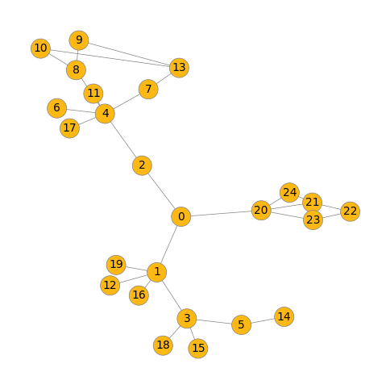
Embedding: [[0.10027, 0.033039, 0.060409, 0.014663, 0.0402, 0.213162, 0.014663, 0.046783, 0.197898, 0.014663, 0.064577, 0.014663, 0.014663, 0.014663, 0.014663, 0.014663, 0.082373, 0.014663, 0.014663, 0.014663]]
Output: [1.4508682397718076e-06, 0.9999985694885254]
Embedding: [[0.094012, 0.033376, 0.04373, 0.015689, 0.042104, 0.218531, 0.015689, 0.049001, 0.188363, 0.015689, 0.066135, 0.015689, 0.015689, 0.015689, 0.015689, 0.015689, 0.092164, 0.015689, 0.015689, 0.015689]]
Output: [4.2802432176358707e-07, 0.9999995231628418]
Embedding: [[0.095795, 0.035613, 0.042514, 0.016699, 0.042033, 0.201334, 0.016699, 0.050782, 0.188894, 0.016699, 0.073309, 0.016699, 0.016699, 0.016699, 0.016699, 0.016699, 0.086034, 0.016699, 0.016699, 0.016699]]
Output: [5.501372584149067e-07, 0.9999994039535522]
Embedding: [[0.093474, 0.035297, 0.037324, 0.015917, 0.042212, 0.200833, 0.015917, 0.054836, 0.185933, 0.015917, 0.076341, 0.015917, 0.015917, 0.015917, 0.015917, 0.015917, 0.098669, 0.015917, 0.015917, 0.015917]]
Output: [3.014705498571857e-07, 0.9999996423721313]
Embedding: [[0.087365, 0.030576, 0.033873, 0.015134, 0.041001, 0.225771, 0.015134, 0.055373, 0.180897, 0.015134, 0.075337, 0.015134, 0.015134, 0.015134, 0.015134, 0.015134, 0.103333, 0.015134, 0.015134, 0.015134]]
Output: [2.1770802050014026e-07, 0.9999997615814209]
Embedding: [[0.092274, 0.03375, 0.046501, 0.01578, 0.043641, 0.196885, 0.01578, 0.056342, 0.182709, 0.01578, 0.079506, 0.01578, 0.01578, 0.01578, 0.01578, 0.01578, 0.094817, 0.01578, 0.01578, 0.01578]]
Output: [1.342698055850633e-06, 0.9999986886978149]
Embedding: [[0.083254, 0.029465, 0.070478, 0.016232, 0.041101, 0.20228, 0.016232, 0.051893, 0.174669, 0.016232, 0.071376, 0.016232, 0.016232, 0.016232, 0.016232, 0.016232, 0.096929, 0.016232, 0.016232, 0.016232]]
Output: [4.9544298235559836e-05, 0.9999504089355469]
Embedding: [[0.086922, 0.034312, 0.053247, 0.016714, 0.037601, 0.195749, 0.016714, 0.05566, 0.175111, 0.016714, 0.076495, 0.016714, 0.016714, 0.016714, 0.016714, 0.016714, 0.101045, 0.016714, 0.016714, 0.016714]]
Output: [1.0723034392867703e-05, 0.9999892711639404]
Embedding: [[0.083569, 0.03126, 0.060113, 0.016702, 0.042917, 0.191169, 0.016702, 0.05839, 0.165162, 0.016702, 0.078543, 0.016702, 0.016702, 0.016702, 0.016702, 0.016702, 0.105157, 0.016702, 0.016702, 0.016702]]
Output: [3.1648010917706415e-05, 0.999968409538269]
Embedding: [[0.083253, 0.031175, 0.051821, 0.017905, 0.040693, 0.182708, 0.017905, 0.059619, 0.161425, 0.017905, 0.087296, 0.017905, 0.017905, 0.017905, 0.017905, 0.017905, 0.105054, 0.017905, 0.017905, 0.017905]]
Output: [3.519357051118277e-05, 0.9999648332595825]
Embedding: [[0.078734, 0.031993, 0.049423, 0.019167, 0.039236, 0.179758, 0.019167, 0.058649, 0.158263, 0.019167, 0.085425, 0.019167, 0.019167, 0.019167, 0.019167, 0.019167, 0.107684, 0.019167, 0.019167, 0.019167]]
Output: [5.666595825459808e-05, 0.9999433755874634]
Embedding: [[0.080552, 0.031811, 0.059469, 0.01781, 0.037274, 0.18334, 0.01781, 0.057211, 0.165596, 0.01781, 0.08431, 0.01781, 0.01781, 0.01781, 0.01781, 0.01781, 0.104524, 0.01781, 0.01781, 0.01781]]
Output: [9.583665087120607e-05, 0.9999041557312012]
Embedding: [[0.078496, 0.032502, 0.050784, 0.018997, 0.038698, 0.178755, 0.018997, 0.059468, 0.156784, 0.018997, 0.085919, 0.018997, 0.018997, 0.018997, 0.018997, 0.018997, 0.109624, 0.018997, 0.018997, 0.018997]]
Output: [7.051616557873785e-05, 0.9999294281005859]
Embedding: [[0.076166, 0.031445, 0.079539, 0.018138, 0.038873, 0.171431, 0.018138, 0.058849, 0.15236, 0.018138, 0.08357, 0.018138, 0.018138, 0.018138, 0.018138, 0.018138, 0.108249, 0.018138, 0.018138, 0.018138]]
Output: [0.0011762258363887668, 0.9988237023353577]
Embedding: [[0.082913, 0.031085, 0.075416, 0.016203, 0.041604, 0.176466, 0.016203, 0.063009, 0.15369, 0.016203, 0.081611, 0.016203, 0.016203, 0.016203, 0.016203, 0.016203, 0.115969, 0.016203, 0.016203, 0.016203]]
Output: [0.0002621910534799099, 0.9997377991676331]
Embedding: [[0.075351, 0.033475, 0.053097, 0.019292, 0.038268, 0.173534, 0.019292, 0.061725, 0.147263, 0.019292, 0.08865, 0.019292, 0.019292, 0.019292, 0.019292, 0.019292, 0.116425, 0.019292, 0.019292, 0.019292]]
Output: [0.0001761032035574317, 0.9998238682746887]
Embedding: [[0.079472, 0.031523, 0.075809, 0.0179, 0.039769, 0.169131, 0.0179, 0.060576, 0.150636, 0.0179, 0.088134, 0.0179, 0.0179, 0.0179, 0.0179, 0.0179, 0.108054, 0.0179, 0.0179, 0.0179]]
Output: [0.0007588125299662352, 0.9992412328720093]
Embedding: [[0.079472, 0.031523, 0.075809, 0.0179, 0.039769, 0.169131, 0.0179, 0.060576, 0.150636, 0.0179, 0.088134, 0.0179, 0.0179, 0.0179, 0.0179, 0.0179, 0.108054, 0.0179, 0.0179, 0.0179]]
Output: [0.0007588132284581661, 0.9992412328720093]
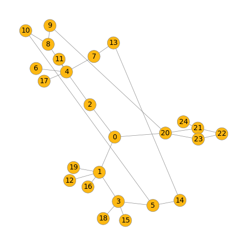
Embedding: [[0.077982, 0.031124, 0.052946, 0.018592, 0.040093, 0.170595, 0.018592, 0.064072, 0.148322, 0.018592, 0.095533, 0.018592, 0.018592, 0.018592, 0.018592, 0.018592, 0.114821, 0.018592, 0.018592, 0.018592]]
Output: [0.00015016236284282058, 0.999849796295166]
Embedding: [[0.077784, 0.029851, 0.065481, 0.01697, 0.03993, 0.177929, 0.01697, 0.064608, 0.150173, 0.01697, 0.089779, 0.01697, 0.01697, 0.01697, 0.01697, 0.01697, 0.117794, 0.01697, 0.01697, 0.01697]]
Output: [0.0003007898048963398, 0.9996992349624634]
Embedding: [[0.080327, 0.033996, 0.049199, 0.016982, 0.043553, 0.164521, 0.016982, 0.0699, 0.152623, 0.016982, 0.097015, 0.016982, 0.016982, 0.016982, 0.016982, 0.016982, 0.122067, 0.016982, 0.016982, 0.016982]]
Output: [3.4113512811018154e-05, 0.9999659061431885]
Embedding: [[0.074381, 0.032228, 0.065153, 0.018077, 0.032979, 0.17664, 0.018077, 0.060156, 0.151864, 0.018077, 0.089072, 0.018077, 0.018077, 0.018077, 0.018077, 0.018077, 0.118678, 0.018077, 0.018077, 0.018077]]
Output: [0.0007386287907138467, 0.9992613196372986]
Embedding: [[0.085957, 0.034886, 0.049278, 0.016517, 0.040775, 0.161306, 0.016517, 0.071799, 0.151809, 0.016517, 0.094664, 0.016517, 0.016517, 0.016517, 0.016517, 0.016517, 0.127842, 0.016517, 0.016517, 0.016517]]
Output: [3.121768531855196e-05, 0.9999687671661377]
Embedding: [[0.068546, 0.033214, 0.068368, 0.019387, 0.034192, 0.171666, 0.019387, 0.058577, 0.145936, 0.019387, 0.09019, 0.019387, 0.019387, 0.019387, 0.019387, 0.019387, 0.116051, 0.019387, 0.019387, 0.019387]]
Output: [0.0019000836182385683, 0.9980999827384949]
Embedding: [[0.092495, 0.034624, 0.043009, 0.015167, 0.042206, 0.15643, 0.015167, 0.078498, 0.152016, 0.015167, 0.092664, 0.015167, 0.015167, 0.015167, 0.015167, 0.015167, 0.141222, 0.015167, 0.015167, 0.015167]]
Output: [7.543951596744591e-06, 0.9999924898147583]
Embedding: [[0.081603, 0.035055, 0.051885, 0.018041, 0.041255, 0.158948, 0.018041, 0.068408, 0.143187, 0.018041, 0.099817, 0.018041, 0.018041, 0.018041, 0.018041, 0.018041, 0.121392, 0.018041, 0.018041, 0.018041]]
Output: [9.947187209036201e-05, 0.9999004602432251]
Embedding: [[0.074914, 0.033437, 0.045576, 0.018512, 0.036255, 0.170186, 0.018512, 0.066483, 0.143815, 0.018512, 0.093548, 0.018512, 0.018512, 0.018512, 0.018512, 0.018512, 0.132153, 0.018512, 0.018512, 0.018512]]
Output: [0.00010717516852309927, 0.9998928308486938]
Embedding: [[0.07555, 0.031599, 0.069189, 0.0183, 0.03898, 0.165229, 0.0183, 0.065935, 0.142053, 0.0183, 0.08948, 0.0183, 0.0183, 0.0183, 0.0183, 0.0183, 0.120684, 0.0183, 0.0183, 0.0183]]
Output: [0.0010629916796460748, 0.9989369511604309]
Embedding: [[0.083372, 0.037284, 0.044648, 0.01661, 0.038399, 0.161199, 0.01661, 0.075582, 0.141661, 0.01661, 0.10585, 0.01661, 0.01661, 0.01661, 0.01661, 0.01661, 0.129294, 0.01661, 0.01661, 0.01661]]
Output: [3.051561361644417e-05, 0.999969482421875]
Embedding: [[0.076187, 0.032844, 0.069293, 0.018581, 0.041066, 0.157875, 0.018581, 0.067076, 0.13939, 0.018581, 0.092397, 0.018581, 0.018581, 0.018581, 0.018581, 0.018581, 0.119486, 0.018581, 0.018581, 0.018581]]
Output: [0.0010649266187101603, 0.9989350438117981]
Embedding: [[0.087177, 0.034166, 0.050062, 0.014898, 0.041066, 0.160182, 0.014898, 0.077975, 0.148593, 0.014898, 0.09353, 0.014898, 0.014898, 0.014898, 0.014898, 0.014898, 0.143373, 0.014898, 0.014898, 0.014898]]
Output: [2.502057577657979e-05, 0.9999749660491943]
Embedding: [[0.069824, 0.028349, 0.094844, 0.0181, 0.039476, 0.162099, 0.0181, 0.063448, 0.13786, 0.0181, 0.087726, 0.0181, 0.0181, 0.0181, 0.0181, 0.0181, 0.117269, 0.0181, 0.0181, 0.0181]]
Output: [0.012557254172861576, 0.9874427914619446]
Embedding: [[0.073874, 0.031067, 0.068877, 0.018808, 0.038986, 0.161911, 0.018808, 0.066852, 0.138396, 0.018808, 0.092216, 0.018808, 0.018808, 0.018808, 0.018808, 0.018808, 0.120928, 0.018808, 0.018808, 0.018808]]
Output: [0.0017005113186314702, 0.9982995390892029]
Embedding: [[0.084616, 0.034627, 0.037953, 0.016395, 0.040473, 0.150016, 0.016395, 0.078898, 0.14176, 0.016395, 0.109273, 0.016395, 0.016395, 0.016395, 0.016395, 0.016395, 0.142044, 0.016395, 0.016395, 0.016395]]
Output: [1.6060630514402874e-05, 0.9999839067459106]
Embedding: [[0.083292, 0.035346, 0.064645, 0.017203, 0.045231, 0.142083, 0.017203, 0.075065, 0.134979, 0.017203, 0.103392, 0.017203, 0.017203, 0.017203, 0.017203, 0.017203, 0.126736, 0.017203, 0.017203, 0.017203]]
Output: [0.00038333615520969033, 0.9996166229248047]
Embedding: [[0.079204, 0.034174, 0.05723, 0.018405, 0.040444, 0.14794, 0.018405, 0.072363, 0.134573, 0.018405, 0.107768, 0.018405, 0.018405, 0.018405, 0.018405, 0.018405, 0.123847, 0.018405, 0.018405, 0.018405]]
Output: [0.0004829415993299335, 0.9995170831680298]
Embedding: [[0.073225, 0.032879, 0.054204, 0.019267, 0.039094, 0.152666, 0.019267, 0.070575, 0.133615, 0.019267, 0.101682, 0.019267, 0.019267, 0.019267, 0.019267, 0.019267, 0.130118, 0.019267, 0.019267, 0.019267]]
Output: [0.0006949012749828398, 0.9993051290512085]
Embedding: [[0.074749, 0.029411, 0.09524, 0.018113, 0.039624, 0.139443, 0.018113, 0.068857, 0.131152, 0.018113, 0.098723, 0.018113, 0.018113, 0.018113, 0.018113, 0.018113, 0.123558, 0.018113, 0.018113, 0.018113]]
Output: [0.022722946479916573, 0.9772770404815674]
Embedding: [[0.078094, 0.036101, 0.055842, 0.018561, 0.044101, 0.133642, 0.018561, 0.077395, 0.127209, 0.018561, 0.110543, 0.018561, 0.018561, 0.018561, 0.018561, 0.018561, 0.132904, 0.018561, 0.018561, 0.018561]]
Output: [0.0005598269635811448, 0.9994401335716248]
Embedding: [[0.067078, 0.02849, 0.082086, 0.019359, 0.035273, 0.147754, 0.019359, 0.068646, 0.132831, 0.019359, 0.10023, 0.019359, 0.019359, 0.019359, 0.019359, 0.019359, 0.124661, 0.019359, 0.019359, 0.019359]]
Output: [0.0277334526181221, 0.9722665548324585]
Embedding: [[0.069285, 0.031528, 0.072418, 0.018992, 0.037916, 0.147806, 0.018992, 0.072093, 0.128139, 0.018992, 0.102711, 0.018992, 0.018992, 0.018992, 0.018992, 0.018992, 0.129197, 0.018992, 0.018992, 0.018992]]
Output: [0.0074225557036697865, 0.9925773739814758]
Embedding: [[0.069948, 0.032009, 0.075513, 0.019367, 0.039823, 0.14097, 0.019367, 0.072234, 0.124827, 0.019367, 0.100343, 0.019367, 0.019367, 0.019367, 0.019367, 0.019367, 0.131301, 0.019367, 0.019367, 0.019367]]
Output: [0.010395227931439877, 0.9896047115325928]
Embedding: [[0.080799, 0.034106, 0.054961, 0.015842, 0.039108, 0.137082, 0.015842, 0.088086, 0.129196, 0.015842, 0.104884, 0.015842, 0.015842, 0.015842, 0.015842, 0.015842, 0.157519, 0.015842, 0.015842, 0.015842]]
Output: [0.000380204786779359, 0.999619722366333]
Embedding: [[0.068017, 0.0305, 0.038916, 0.019845, 0.037032, 0.136415, 0.019845, 0.082862, 0.120214, 0.019845, 0.120123, 0.019845, 0.019845, 0.019845, 0.019845, 0.019845, 0.147623, 0.019845, 0.019845, 0.019845]]
Output: [0.0007448454271070659, 0.9992551207542419]
Embedding: [[0.065878, 0.02966, 0.077214, 0.019942, 0.03376, 0.141785, 0.019942, 0.073008, 0.122866, 0.019942, 0.105547, 0.019942, 0.019942, 0.019942, 0.019942, 0.019942, 0.130918, 0.019942, 0.019942, 0.019942]]
Output: [0.04384210705757141, 0.9561578631401062]
Embedding: [[0.063857, 0.02865, 0.059233, 0.020332, 0.037814, 0.138689, 0.020332, 0.075643, 0.119172, 0.020332, 0.117587, 0.020332, 0.020332, 0.020332, 0.020332, 0.020332, 0.135702, 0.020332, 0.020332, 0.020332]]
Output: [0.012183977290987968, 0.9878160357475281]

Embedding: [[0.065518, 0.030533, 0.068913, 0.019039, 0.036823, 0.134714, 0.019039, 0.079648, 0.116231, 0.019039, 0.114918, 0.019039, 0.019039, 0.019039, 0.019039, 0.019039, 0.143273, 0.019039, 0.019039, 0.019039]]
Output: [0.022020678967237473, 0.9779793620109558]
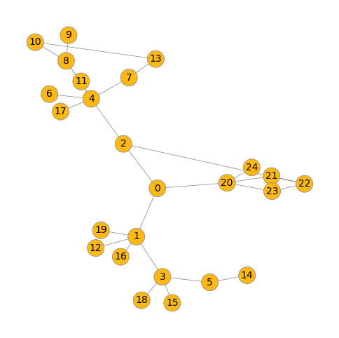
Embedding: [[0.060019, 0.028828, 0.105479, 0.019815, 0.036158, 0.127655, 0.019815, 0.073567, 0.112464, 0.019815, 0.105043, 0.019815, 0.019815, 0.019815, 0.019815, 0.019815, 0.132823, 0.019815, 0.019815, 0.019815]]
Output: [0.39347198605537415, 0.6065280437469482]
Embedding: [[0.067377, 0.031172, 0.088282, 0.019259, 0.03757, 0.123655, 0.019259, 0.07663, 0.113295, 0.019259, 0.113215, 0.019259, 0.019259, 0.019259, 0.019259, 0.019259, 0.13696, 0.019259, 0.019259, 0.019259]]
Output: [0.09824986010789871, 0.9017500877380371]
Embedding: [[0.066624, 0.030877, 0.080535, 0.018185, 0.035296, 0.1306, 0.018185, 0.082682, 0.116921, 0.018185, 0.112276, 0.018185, 0.018185, 0.018185, 0.018185, 0.018185, 0.144151, 0.018185, 0.018185, 0.018185]]
Output: [0.04877421632409096, 0.951225757598877]
Embedding: [[0.064096, 0.030436, 0.068818, 0.019839, 0.038615, 0.128634, 0.019839, 0.079412, 0.114614, 0.019839, 0.117218, 0.019839, 0.019839, 0.019839, 0.019839, 0.019839, 0.139924, 0.019839, 0.019839, 0.019839]]
Output: [0.030235160142183304, 0.969764769077301]
Embedding: [[0.060822, 0.031724, 0.092556, 0.020846, 0.033533, 0.127269, 0.020846, 0.071861, 0.110404, 0.020846, 0.108758, 0.020846, 0.020846, 0.020846, 0.020846, 0.020846, 0.133767, 0.020846, 0.020846, 0.020846]]
Output: [0.2920858860015869, 0.7079141139984131]
Embedding: [[0.06043, 0.03012, 0.077339, 0.020427, 0.032042, 0.13447, 0.020427, 0.074324, 0.115324, 0.020427, 0.114881, 0.020427, 0.020427, 0.020427, 0.020427, 0.020427, 0.136376, 0.020427, 0.020427, 0.020427]]
Output: [0.12655270099639893, 0.8734472990036011]
Embedding: [[0.061743, 0.030859, 0.067753, 0.018957, 0.032608, 0.136664, 0.018957, 0.079314, 0.115439, 0.018957, 0.106085, 0.018957, 0.018957, 0.018957, 0.018957, 0.018957, 0.161004, 0.018957, 0.018957, 0.018957]]
Output: [0.036960966885089874, 0.963038980960846]
Embedding: [[0.065408, 0.028936, 0.087131, 0.017873, 0.037407, 0.126656, 0.017873, 0.085081, 0.11244, 0.017873, 0.109552, 0.017873, 0.017873, 0.017873, 0.017873, 0.017873, 0.150789, 0.017873, 0.017873, 0.017873]]
Output: [0.09439345449209213, 0.9056065082550049]
Embedding: [[0.064655, 0.029563, 0.046341, 0.019516, 0.036671, 0.126596, 0.019516, 0.086693, 0.111012, 0.019516, 0.127268, 0.019516, 0.019516, 0.019516, 0.019516, 0.019516, 0.156526, 0.019516, 0.019516, 0.019516]]
Output: [0.0053034257143735886, 0.9946964979171753]
Embedding: [[0.064655, 0.029563, 0.046341, 0.019516, 0.036671, 0.126596, 0.019516, 0.086693, 0.111012, 0.019516, 0.127268, 0.019516, 0.019516, 0.019516, 0.019516, 0.019516, 0.156526, 0.019516, 0.019516, 0.019516]]
Output: [0.0053034257143735886, 0.9946964979171753]
Embedding: [[0.06282, 0.030078, 0.098314, 0.018373, 0.03587, 0.121833, 0.018373, 0.079979, 0.108243, 0.018373, 0.114056, 0.018373, 0.018373, 0.018373, 0.018373, 0.018373, 0.146702, 0.018373, 0.018373, 0.018373]]
Output: [0.2725622057914734, 0.7274378538131714]
Embedding: [[0.061018, 0.029848, 0.096733, 0.01911, 0.036594, 0.121132, 0.01911, 0.081015, 0.104913, 0.01911, 0.110839, 0.01911, 0.01911, 0.01911, 0.01911, 0.01911, 0.147694, 0.01911, 0.01911, 0.01911]]
Output: [0.3334091305732727, 0.6665909290313721]
Embedding: [[0.062803, 0.030359, 0.091312, 0.017736, 0.03754, 0.121647, 0.017736, 0.08535, 0.104267, 0.017736, 0.115466, 0.017736, 0.017736, 0.017736, 0.017736, 0.017736, 0.15616, 0.017736, 0.017736, 0.017736]]
Output: [0.17433133721351624, 0.8256686925888062]
Embedding: [[0.057813, 0.031444, 0.083347, 0.020021, 0.030796, 0.127902, 0.020021, 0.075586, 0.109495, 0.020021, 0.113086, 0.020021, 0.020021, 0.020021, 0.020021, 0.020021, 0.1503, 0.020021, 0.020021, 0.020021]]
Output: [0.2745118737220764, 0.7254881858825684]
Embedding: [[0.069286, 0.032689, 0.071766, 0.017267, 0.039819, 0.10672, 0.017267, 0.093634, 0.103462, 0.017267, 0.135592, 0.017267, 0.017267, 0.017267, 0.017267, 0.017267, 0.157096, 0.017267, 0.017267, 0.017267]]
Output: [0.037221312522888184, 0.9627786874771118]
Embedding: [[0.067391, 0.030788, 0.049646, 0.015543, 0.034986, 0.111061, 0.015543, 0.107433, 0.104028, 0.015543, 0.132093, 0.015543, 0.015543, 0.015543, 0.015543, 0.015543, 0.191595, 0.015543, 0.015543, 0.015543]]
Output: [0.005737344268709421, 0.9942626357078552]
Embedding: [[0.063815, 0.029782, 0.081289, 0.018521, 0.03353, 0.114516, 0.018521, 0.089431, 0.104316, 0.018521, 0.124209, 0.018521, 0.018521, 0.018521, 0.018521, 0.018521, 0.155383, 0.018521, 0.018521, 0.018521]]
Output: [0.21949708461761475, 0.7805029153823853]
Embedding: [[0.060535, 0.028128, 0.054021, 0.019245, 0.034812, 0.117212, 0.019245, 0.092424, 0.104798, 0.019245, 0.1333, 0.019245, 0.019245, 0.019245, 0.019245, 0.019245, 0.16307, 0.019245, 0.019245, 0.019245]]
Output: [0.0388340950012207, 0.9611659049987793]
Embedding: [[0.060593, 0.029956, 0.079926, 0.019204, 0.036956, 0.11371, 0.019204, 0.086201, 0.101063, 0.019204, 0.122938, 0.019204, 0.019204, 0.019204, 0.019204, 0.019204, 0.157418, 0.019204, 0.019204, 0.019204]]
Output: [0.22219669818878174, 0.7778033018112183]
Embedding: [[0.060593, 0.029956, 0.079926, 0.019204, 0.036956, 0.11371, 0.019204, 0.086201, 0.101063, 0.019204, 0.122938, 0.019204, 0.019204, 0.019204, 0.019204, 0.019204, 0.157418, 0.019204, 0.019204, 0.019204]]
Output: [0.22219669818878174, 0.7778033018112183]
Embedding: [[0.061922, 0.030947, 0.077972, 0.019802, 0.03635, 0.108952, 0.019802, 0.086695, 0.099572, 0.019802, 0.12657, 0.019802, 0.019802, 0.019802, 0.019802, 0.019802, 0.153196, 0.019802, 0.019802, 0.019802]]
Output: [0.23986157774925232, 0.7601384520530701]
Embedding: [[0.058195, 0.027905, 0.080313, 0.019954, 0.034024, 0.11222, 0.019954, 0.086244, 0.101309, 0.019954, 0.128257, 0.019954, 0.019954, 0.019954, 0.019954, 0.019954, 0.152041, 0.019954, 0.019954, 0.019954]]
Output: [0.42840099334716797, 0.5715990662574768]
Embedding: [[0.059481, 0.030588, 0.095873, 0.019628, 0.033746, 0.105482, 0.019628, 0.083892, 0.097449, 0.019628, 0.124993, 0.019628, 0.019628, 0.019628, 0.019628, 0.019628, 0.152586, 0.019628, 0.019628, 0.019628]]
Output: [0.650951623916626, 0.349048376083374]
Embedding: [[0.05924, 0.026215, 0.071229, 0.017427, 0.033986, 0.102256, 0.017427, 0.102279, 0.095103, 0.017427, 0.119454, 0.017427, 0.017427, 0.017427, 0.017427, 0.017427, 0.198543, 0.017427, 0.017427, 0.017427]]
Output: [0.3167749345302582, 0.6832250952720642]
Embedding: [[0.052216, 0.026951, 0.082763, 0.019403, 0.030764, 0.10846, 0.019403, 0.090166, 0.091848, 0.019403, 0.128734, 0.019403, 0.019403, 0.019403, 0.019403, 0.019403, 0.174669, 0.019403, 0.019403, 0.019403]]
Output: [0.7765362858772278, 0.22346368432044983]
Embedding: [[0.055111, 0.027195, 0.072762, 0.018999, 0.033884, 0.100258, 0.018999, 0.097478, 0.092352, 0.018999, 0.132603, 0.018999, 0.018999, 0.018999, 0.018999, 0.018999, 0.179372, 0.018999, 0.018999, 0.018999]]
Output: [0.5316861271858215, 0.46831390261650085]
Embedding: [[0.050164, 0.027737, 0.094173, 0.021426, 0.029382, 0.100028, 0.021426, 0.084694, 0.089081, 0.021426, 0.131466, 0.021426, 0.021426, 0.021426, 0.021426, 0.021426, 0.157587, 0.021426, 0.021426, 0.021426]]
Output: [0.953295886516571, 0.04670408368110657]
Embedding: [[0.0551, 0.030037, 0.058552, 0.019886, 0.032685, 0.097723, 0.019886, 0.09856, 0.086158, 0.019886, 0.150132, 0.019886, 0.019886, 0.019886, 0.019886, 0.019886, 0.172307, 0.019886, 0.019886, 0.019886]]
Output: [0.33240753412246704, 0.6675924062728882]
Embedding: [[0.05311, 0.028688, 0.116633, 0.020182, 0.031899, 0.086977, 0.020182, 0.089354, 0.081634, 0.020182, 0.134896, 0.020182, 0.020182, 0.020182, 0.020182, 0.020182, 0.15481, 0.020182, 0.020182, 0.020182]]
Output: [0.9838686585426331, 0.016131272539496422]
Embedding: [[0.052133, 0.025521, 0.089571, 0.017566, 0.031213, 0.092486, 0.017566, 0.103662, 0.08522, 0.017566, 0.137251, 0.017566, 0.017566, 0.017566, 0.017566, 0.017566, 0.189721, 0.017566, 0.017566, 0.017566]]
Output: [0.9085589051246643, 0.09144111722707748]
Embedding: [[0.050964, 0.028624, 0.118186, 0.020071, 0.029815, 0.084513, 0.020071, 0.090563, 0.079419, 0.020071, 0.137493, 0.020071, 0.020071, 0.020071, 0.020071, 0.020071, 0.159636, 0.020071, 0.020071, 0.020071]]
Output: [0.9919363260269165, 0.008063742890954018]
Embedding: [[0.046937, 0.02615, 0.133888, 0.019546, 0.029761, 0.082079, 0.019546, 0.092198, 0.075232, 0.019546, 0.136679, 0.019546, 0.019546, 0.019546, 0.019546, 0.019546, 0.162074, 0.019546, 0.019546, 0.019546]]
Output: [0.998116135597229, 0.001883848337456584]
Embedding: [[0.050022, 0.026251, 0.091086, 0.019726, 0.033685, 0.087378, 0.019726, 0.099713, 0.079372, 0.019726, 0.14232, 0.019726, 0.019726, 0.019726, 0.019726, 0.019726, 0.173186, 0.019726, 0.019726, 0.019726]]
Output: [0.9589597582817078, 0.04104025661945343]
Embedding: [[0.049877, 0.026907, 0.066796, 0.02073, 0.032959, 0.091877, 0.02073, 0.095846, 0.080199, 0.02073, 0.156642, 0.02073, 0.02073, 0.02073, 0.02073, 0.02073, 0.170866, 0.02073, 0.02073, 0.02073]]
Output: [0.8109425902366638, 0.18905746936798096]
Embedding: [[0.04828, 0.025745, 0.100661, 0.019846, 0.030075, 0.087921, 0.019846, 0.097491, 0.079136, 0.019846, 0.141577, 0.019846, 0.019846, 0.019846, 0.019846, 0.019846, 0.170812, 0.019846, 0.019846, 0.019846]]
Output: [0.9871627688407898, 0.012837199494242668]
Embedding: [[0.050747, 0.028514, 0.087113, 0.020062, 0.031877, 0.086641, 0.020062, 0.098343, 0.077505, 0.020062, 0.145835, 0.020062, 0.020062, 0.020062, 0.020062, 0.020062, 0.172738, 0.020062, 0.020062, 0.020062]]
Output: [0.9522735476493835, 0.04772651195526123]
Embedding: [[0.049479, 0.024905, 0.084309, 0.018413, 0.028819, 0.084108, 0.018413, 0.105294, 0.077602, 0.018413, 0.142229, 0.018413, 0.018413, 0.018413, 0.018413, 0.018413, 0.200712, 0.018413, 0.018413, 0.018413]]
Output: [0.9705370664596558, 0.029462989419698715]
Embedding: [[0.047537, 0.028028, 0.096345, 0.020593, 0.028969, 0.083424, 0.020593, 0.093626, 0.075949, 0.020593, 0.149079, 0.020593, 0.020593, 0.020593, 0.020593, 0.020593, 0.170524, 0.020593, 0.020593, 0.020593]]
Output: [0.9895050525665283, 0.01049500796943903]
Embedding: [[0.047379, 0.025117, 0.09322, 0.019768, 0.030425, 0.082507, 0.019768, 0.102229, 0.076474, 0.019768, 0.133698, 0.019768, 0.019768, 0.019768, 0.019768, 0.019768, 0.191499, 0.019768, 0.019768, 0.019768]]
Output: [0.9877289533615112, 0.012271068058907986]
Embedding: [[0.048901, 0.027572, 0.087054, 0.019881, 0.028808, 0.083113, 0.019881, 0.098689, 0.075946, 0.019881, 0.156328, 0.019881, 0.019881, 0.019881, 0.019881, 0.019881, 0.174893, 0.019881, 0.019881, 0.019881]]
Output: [0.9790496230125427, 0.02095033787190914]
Embedding: [[0.047598, 0.024639, 0.104791, 0.019275, 0.030172, 0.075375, 0.019275, 0.102978, 0.070966, 0.019275, 0.143049, 0.019275, 0.019275, 0.019275, 0.019275, 0.019275, 0.188405, 0.019275, 0.019275, 0.019275]]
Output: [0.9963518381118774, 0.003648180514574051]
Embedding: [[0.047047, 0.026903, 0.08453, 0.020502, 0.029974, 0.082398, 0.020502, 0.102858, 0.072422, 0.020502, 0.144057, 0.020502, 0.020502, 0.020502, 0.020502, 0.020502, 0.184293, 0.020502, 0.020502, 0.020502]]
Output: [0.983604371547699, 0.016395585611462593]
Embedding: [[0.044583, 0.025886, 0.11393, 0.018086, 0.031025, 0.069563, 0.018086, 0.109433, 0.064795, 0.018086, 0.153045, 0.018086, 0.018086, 0.018086, 0.018086, 0.018086, 0.188797, 0.018086, 0.018086, 0.018086]]
Output: [0.9982839226722717, 0.0017160017741844058]
Embedding: [[0.04759, 0.026044, 0.084506, 0.017967, 0.030097, 0.072518, 0.017967, 0.117608, 0.068257, 0.017967, 0.141342, 0.017967, 0.017967, 0.017967, 0.017967, 0.017967, 0.214406, 0.017967, 0.017967, 0.017967]]
Output: [0.9855896830558777, 0.014410353265702724]
Embedding: [[0.043173, 0.026223, 0.10767, 0.020487, 0.028358, 0.06795, 0.020487, 0.103923, 0.062701, 0.020487, 0.154546, 0.020487, 0.020487, 0.020487, 0.020487, 0.020487, 0.180101, 0.020487, 0.020487, 0.020487]]
Output: [0.9992930889129639, 0.0007068307604640722]
Embedding: [[0.041574, 0.024629, 0.101231, 0.019012, 0.027034, 0.068748, 0.019012, 0.109818, 0.060982, 0.019012, 0.159184, 0.019012, 0.019012, 0.019012, 0.019012, 0.019012, 0.197669, 0.019012, 0.019012, 0.019012]]
Output: [0.9992560744285583, 0.0007439644541591406]
Embedding: [[0.041516, 0.022946, 0.053919, 0.018088, 0.026337, 0.066676, 0.018088, 0.121412, 0.06124, 0.018088, 0.168382, 0.018088, 0.018088, 0.018088, 0.018088, 0.018088, 0.238607, 0.018088, 0.018088, 0.018088]]
Output: [0.9798535108566284, 0.02014647237956524]
Embedding: [[0.037796, 0.022488, 0.07478, 0.019157, 0.025998, 0.064303, 0.019157, 0.119422, 0.058746, 0.019157, 0.174933, 0.019157, 0.019157, 0.019157, 0.019157, 0.019157, 0.210804, 0.019157, 0.019157, 0.019157]]
Output: [0.9988390803337097, 0.0011609172215685248]
Embedding: [[0.015492, 0.013496, 0.165208, 0.013374, 0.013833, 0.018049, 0.013374, 0.145199, 0.017647, 0.013374, 0.218835, 0.013374, 0.013374, 0.013374, 0.013374, 0.013374, 0.245135, 0.013374, 0.013374, 0.013374]]
Output: [1.0, 2.0141501314019372e-11]
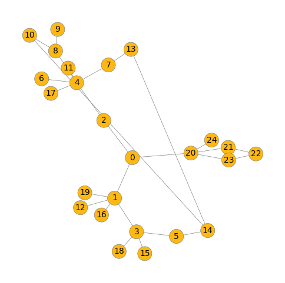
Embedding: [[0.03917, 0.02562, 0.059437, 0.021034, 0.026898, 0.05966, 0.021034, 0.117723, 0.055073, 0.021034, 0.177497, 0.021034, 0.021034, 0.021034, 0.021034, 0.021034, 0.207545, 0.021034, 0.021034, 0.021034]]
Output: [0.9965850114822388, 0.0034149540588259697]
Embedding: [[0.033373, 0.022113, 0.109415, 0.018777, 0.023317, 0.050391, 0.018777, 0.118601, 0.046501, 0.018777, 0.185384, 0.018777, 0.018777, 0.018777, 0.018777, 0.018777, 0.204357, 0.018777, 0.018777, 0.018777]]
Output: [0.9999880790710449, 1.1909600289072841e-05]
Embedding: [[0.036342, 0.024238, 0.069082, 0.02019, 0.025999, 0.05404, 0.02019, 0.120218, 0.04964, 0.02019, 0.183554, 0.02019, 0.02019, 0.02019, 0.02019, 0.02019, 0.214795, 0.02019, 0.02019, 0.02019]]
Output: [0.9995211362838745, 0.0004788362421095371]
Embedding: [[0.033659, 0.021604, 0.097277, 0.018458, 0.024236, 0.049109, 0.018458, 0.12352, 0.046319, 0.018458, 0.168615, 0.018458, 0.018458, 0.018458, 0.018458, 0.018458, 0.232626, 0.018458, 0.018458, 0.018458]]
Output: [0.9999754428863525, 2.4597396986791864e-05]
Embedding: [[0.033946, 0.023314, 0.087748, 0.018912, 0.024557, 0.051157, 0.018912, 0.12243, 0.047615, 0.018912, 0.184648, 0.018912, 0.018912, 0.018912, 0.018912, 0.018912, 0.216553, 0.018912, 0.018912, 0.018912]]
Output: [0.9999326467514038, 6.740738172084093e-05]
Embedding: [[0.018683, 0.015306, 0.11805, 0.014765, 0.015758, 0.023344, 0.014765, 0.148386, 0.022621, 0.014765, 0.213769, 0.014765, 0.014765, 0.014765, 0.014765, 0.014765, 0.261668, 0.014765, 0.014765, 0.014765]]
Output: [1.0, 1.6670286262510103e-09]
Embedding: [[0.030344, 0.020272, 0.09406, 0.016125, 0.021905, 0.041685, 0.016125, 0.141446, 0.039349, 0.016125, 0.161525, 0.016125, 0.016125, 0.016125, 0.016125, 0.016125, 0.272036, 0.016125, 0.016125, 0.016125]]
Output: [0.9999924898147583, 7.529210506618256e-06]
Embedding: [[0.024362, 0.018203, 0.149607, 0.015584, 0.019513, 0.03093, 0.015584, 0.133175, 0.030003, 0.015584, 0.19186, 0.015584, 0.015584, 0.015584, 0.015584, 0.015584, 0.230921, 0.015584, 0.015584, 0.015584]]
Output: [1.0, 2.2424504919626997e-08]
Embedding: [[0.023957, 0.018041, 0.147039, 0.015606, 0.020399, 0.030134, 0.015606, 0.134469, 0.029004, 0.015606, 0.182468, 0.015606, 0.015606, 0.015606, 0.015606, 0.015606, 0.242819, 0.015606, 0.015606, 0.015606]]
Output: [1.0, 2.181469049844509e-08]
Embedding: [[0.02815, 0.020537, 0.11618, 0.018386, 0.024202, 0.042829, 0.018386, 0.125982, 0.039696, 0.018386, 0.166825, 0.018386, 0.018386, 0.018386, 0.018386, 0.018386, 0.233352, 0.018386, 0.018386, 0.018386]]
Output: [0.9999984502792358, 1.5994685327314073e-06]
Embedding: [[0.020755, 0.017862, 0.110806, 0.016719, 0.019445, 0.026398, 0.016719, 0.13989, 0.024928, 0.016719, 0.212057, 0.016719, 0.016719, 0.016719, 0.016719, 0.016719, 0.243945, 0.016719, 0.016719, 0.016719]]
Output: [1.0, 1.330664733956155e-08]
Embedding: [[0.033249, 0.023076, 0.07869, 0.019455, 0.024535, 0.048891, 0.019455, 0.125236, 0.045791, 0.019455, 0.187861, 0.019455, 0.019455, 0.019455, 0.019455, 0.019455, 0.218662, 0.019455, 0.019455, 0.019455]]
Output: [0.9999274015426636, 7.256914977915585e-05]
Embedding: [[0.028526, 0.019524, 0.117544, 0.016705, 0.021028, 0.038842, 0.016705, 0.132141, 0.037342, 0.016705, 0.181968, 0.016705, 0.016705, 0.016705, 0.016705, 0.016705, 0.239326, 0.016705, 0.016705, 0.016705]]
Output: [0.9999992847442627, 7.208076340248226e-07]
Embedding: [[0.025853, 0.018189, 0.118677, 0.01517, 0.020024, 0.034958, 0.01517, 0.138697, 0.033037, 0.01517, 0.183246, 0.01517, 0.01517, 0.01517, 0.01517, 0.01517, 0.260454, 0.01517, 0.01517, 0.01517]]
Output: [0.9999997615814209, 2.443269977447926e-07]
Embedding: [[0.031006, 0.020679, 0.087989, 0.017962, 0.021654, 0.043468, 0.017962, 0.132086, 0.041512, 0.017962, 0.182261, 0.017962, 0.017962, 0.017962, 0.017962, 0.017962, 0.241758, 0.017962, 0.017962, 0.017962]]
Output: [0.999990701675415, 9.26872144191293e-06]
Embedding: [[0.029186, 0.02091, 0.093262, 0.018765, 0.02154, 0.044865, 0.018765, 0.130253, 0.038737, 0.018765, 0.18623, 0.018765, 0.018765, 0.018765, 0.018765, 0.018765, 0.228605, 0.018765, 0.018765, 0.018765]]
Output: [0.9999960660934448, 3.902891876350623e-06]
Embedding: [[0.028369, 0.021292, 0.094007, 0.018496, 0.021887, 0.044548, 0.018496, 0.130872, 0.038431, 0.018496, 0.186092, 0.018496, 0.018496, 0.018496, 0.018496, 0.018496, 0.231043, 0.018496, 0.018496, 0.018496]]
Output: [0.9999960660934448, 3.8819925975985825e-06]
Embedding: [[0.026666, 0.020759, 0.119929, 0.018793, 0.023308, 0.034675, 0.018793, 0.127065, 0.033138, 0.018793, 0.188889, 0.018793, 0.018793, 0.018793, 0.018793, 0.018793, 0.218851, 0.018793, 0.018793, 0.018793]]
Output: [0.9999997615814209, 2.4071346160781104e-07]
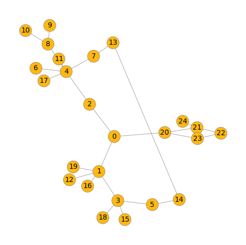
Embedding: [[0.029576, 0.01921, 0.082253, 0.017631, 0.022141, 0.041451, 0.017631, 0.138275, 0.038797, 0.017631, 0.179004, 0.017631, 0.017631, 0.017631, 0.017631, 0.017631, 0.255356, 0.017631, 0.017631, 0.017631]]
Output: [0.9999926090240479, 7.331435426749522e-06]
Embedding: [[0.029334, 0.020651, 0.0673, 0.018426, 0.022207, 0.042804, 0.018426, 0.132044, 0.03896, 0.018426, 0.206987, 0.018426, 0.018426, 0.018426, 0.018426, 0.018426, 0.237023, 0.018426, 0.018426, 0.018426]]
Output: [0.9999747276306152, 2.5325596652692184e-05]
Embedding: [[0.029334, 0.020651, 0.0673, 0.018426, 0.022207, 0.042804, 0.018426, 0.132044, 0.03896, 0.018426, 0.206987, 0.018426, 0.018426, 0.018426, 0.018426, 0.018426, 0.237023, 0.018426, 0.018426, 0.018426]]
Output: [0.9999747276306152, 2.532554935896769e-05]
Embedding: [[0.02147, 0.015928, 0.090318, 0.014368, 0.016776, 0.028068, 0.014368, 0.157165, 0.026698, 0.014368, 0.197859, 0.014368, 0.014368, 0.014368, 0.014368, 0.014368, 0.287675, 0.014368, 0.014368, 0.014368]]
Output: [0.9999998807907104, 6.215457659664025e-08]
Embedding: [[0.022453, 0.016997, 0.076221, 0.01685, 0.01839, 0.03256, 0.01685, 0.146005, 0.030637, 0.01685, 0.200097, 0.01685, 0.01685, 0.01685, 0.01685, 0.01685, 0.27129, 0.01685, 0.01685, 0.01685]]
Output: [0.9999996423721313, 3.6378858681018755e-07]
Embedding: [[0.027714, 0.019426, 0.087229, 0.017578, 0.020835, 0.039671, 0.017578, 0.137496, 0.036838, 0.017578, 0.178283, 0.017578, 0.017578, 0.017578, 0.017578, 0.017578, 0.259149, 0.017578, 0.017578, 0.017578]]
Output: [0.9999974966049194, 2.5484712296020007e-06]
Embedding: [[0.026398, 0.020078, 0.097745, 0.018606, 0.020825, 0.037822, 0.018606, 0.128411, 0.03538, 0.018606, 0.211048, 0.018606, 0.018606, 0.018606, 0.018606, 0.018606, 0.217629, 0.018606, 0.018606, 0.018606]]
Output: [0.9999992847442627, 7.09447135704977e-07]
Embedding: [[0.022171, 0.016905, 0.071429, 0.015078, 0.017291, 0.030635, 0.015078, 0.154658, 0.028635, 0.015078, 0.204054, 0.015078, 0.015078, 0.015078, 0.015078, 0.015078, 0.288362, 0.015078, 0.015078, 0.015078]]
Output: [0.9999995231628418, 4.5982531560184725e-07]
Embedding: [[0.028865, 0.019746, 0.080789, 0.017714, 0.021588, 0.040815, 0.017714, 0.133905, 0.038622, 0.017714, 0.191113, 0.017714, 0.017714, 0.017714, 0.017714, 0.017714, 0.249705, 0.017714, 0.017714, 0.017714]]
Output: [0.9999933242797852, 6.66306459606858e-06]
Embedding: [[0.028578, 0.020997, 0.069624, 0.01753, 0.022013, 0.0374, 0.01753, 0.140786, 0.036318, 0.01753, 0.201394, 0.01753, 0.01753, 0.01753, 0.01753, 0.01753, 0.250062, 0.01753, 0.01753, 0.01753]]
Output: [0.9999873638153076, 1.2650435564864893e-05]
Embedding: [[0.02551, 0.019068, 0.086407, 0.017016, 0.020982, 0.034013, 0.017016, 0.141073, 0.032668, 0.017016, 0.194907, 0.017016, 0.017016, 0.017016, 0.017016, 0.017016, 0.258197, 0.017016, 0.017016, 0.017016]]
Output: [0.9999990463256836, 9.103660545406456e-07]
Embedding: [[0.028354, 0.020114, 0.101693, 0.018541, 0.021794, 0.037066, 0.018541, 0.131634, 0.036039, 0.018541, 0.186176, 0.018541, 0.018541, 0.018541, 0.018541, 0.018541, 0.23318, 0.018541, 0.018541, 0.018541]]
Output: [0.9999991655349731, 8.919615197555686e-07]
Embedding: [[0.026001, 0.017687, 0.077608, 0.015558, 0.019661, 0.035661, 0.015558, 0.149444, 0.033984, 0.015558, 0.193043, 0.015558, 0.015558, 0.015558, 0.015558, 0.015558, 0.275774, 0.015558, 0.015558, 0.015558]]
Output: [0.9999977350234985, 2.3067568690748885e-06]
Embedding: [[0.02495, 0.018404, 0.084198, 0.016903, 0.020719, 0.034186, 0.016903, 0.139901, 0.032557, 0.016903, 0.203215, 0.016903, 0.016903, 0.016903, 0.016903, 0.016903, 0.255941, 0.016903, 0.016903, 0.016903]]
Output: [0.9999991655349731, 8.537202234037977e-07]
Embedding: [[0.026731, 0.019124, 0.076357, 0.017686, 0.020518, 0.038572, 0.017686, 0.137013, 0.035797, 0.017686, 0.211007, 0.017686, 0.017686, 0.017686, 0.017686, 0.017686, 0.240337, 0.017686, 0.017686, 0.017686]]
Output: [0.9999966621398926, 3.3421069929318037e-06]
Embedding: [[0.026936, 0.019398, 0.071492, 0.017975, 0.020119, 0.036773, 0.017975, 0.140129, 0.035311, 0.017975, 0.194284, 0.017975, 0.017975, 0.017975, 0.017975, 0.017975, 0.257837, 0.017975, 0.017975, 0.017975]]
Output: [0.9999963045120239, 3.693662847581436e-06]
Embedding: [[0.02558, 0.01852, 0.072759, 0.017032, 0.019166, 0.037483, 0.017032, 0.143804, 0.033824, 0.017032, 0.206028, 0.017032, 0.017032, 0.017032, 0.017032, 0.017032, 0.255487, 0.017032, 0.017032, 0.017032]]
Output: [0.999997615814209, 2.3861168756411644e-06]
Embedding: [[0.026424, 0.020848, 0.090804, 0.018016, 0.02323, 0.0355, 0.018016, 0.132365, 0.034071, 0.018016, 0.20588, 0.018016, 0.018016, 0.018016, 0.018016, 0.018016, 0.232705, 0.018016, 0.018016, 0.018016]]
Output: [0.9999984502792358, 1.5290133887901902e-06]
Embedding: [[0.022983, 0.016818, 0.100932, 0.015218, 0.018585, 0.03071, 0.015218, 0.144876, 0.029255, 0.015218, 0.204826, 0.015218, 0.015218, 0.015218, 0.015218, 0.015218, 0.263613, 0.015218, 0.015218, 0.015218]]
Output: [0.9999998807907104, 9.754889873647699e-08]